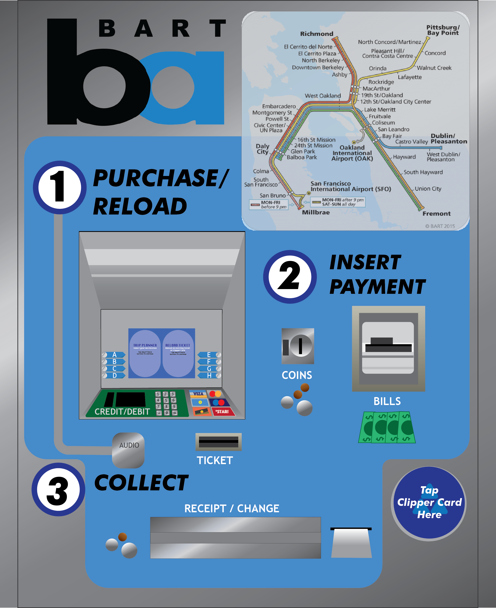
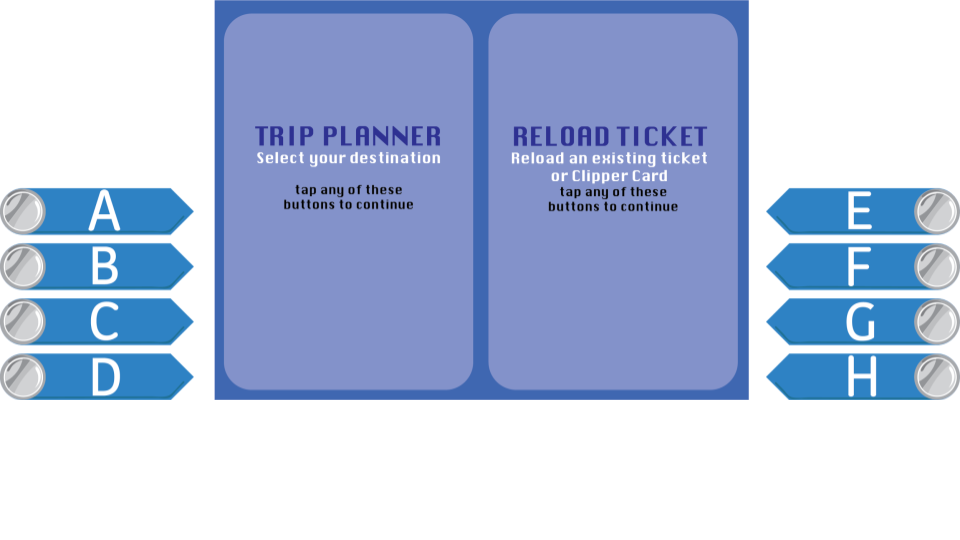
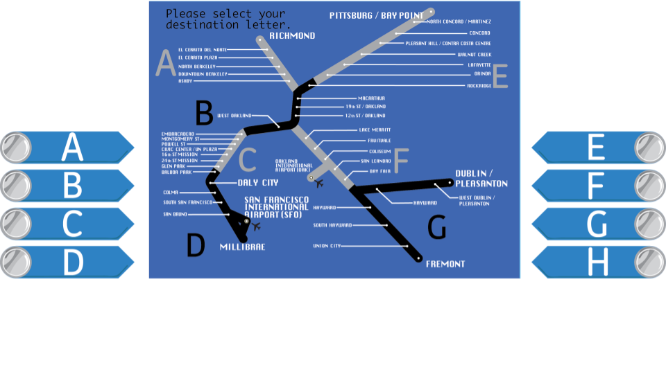
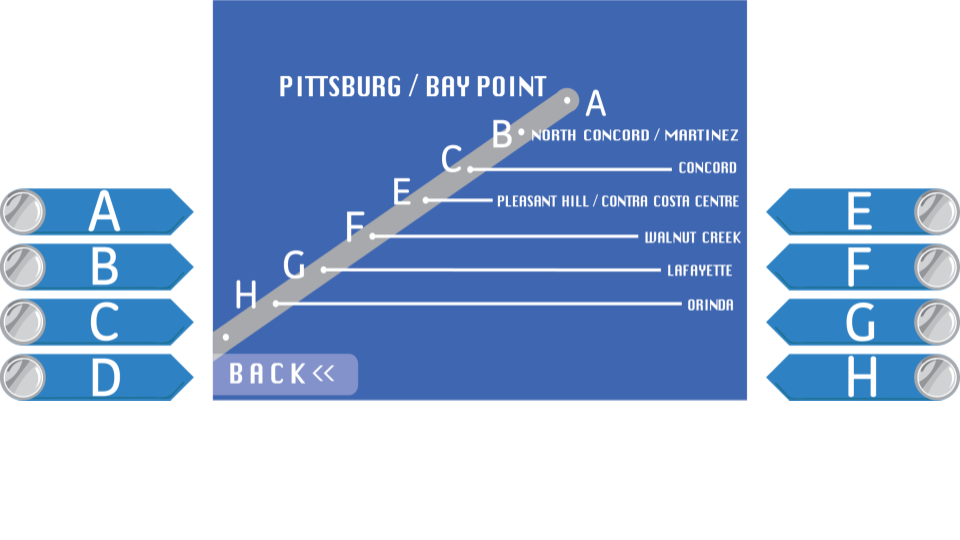
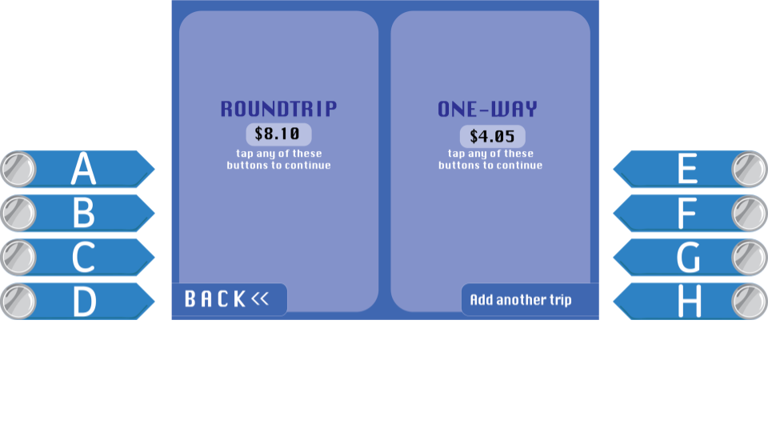
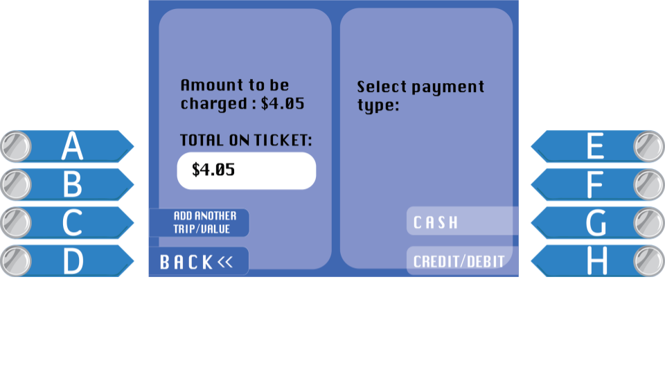
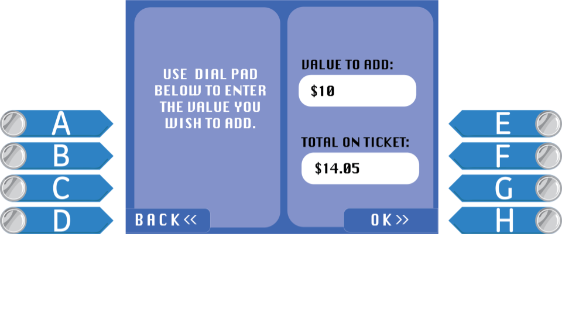
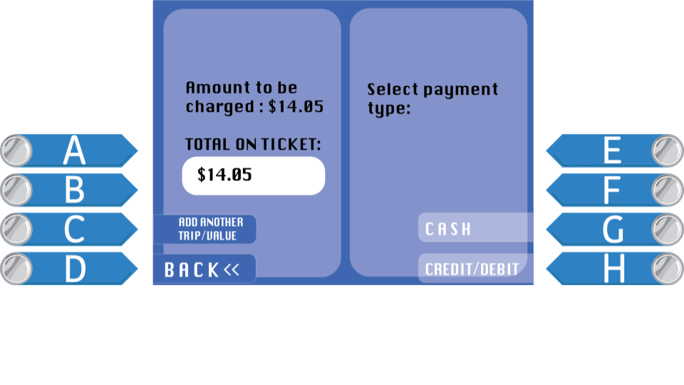
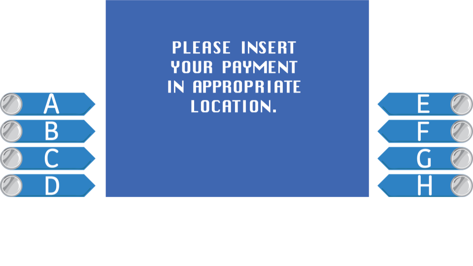
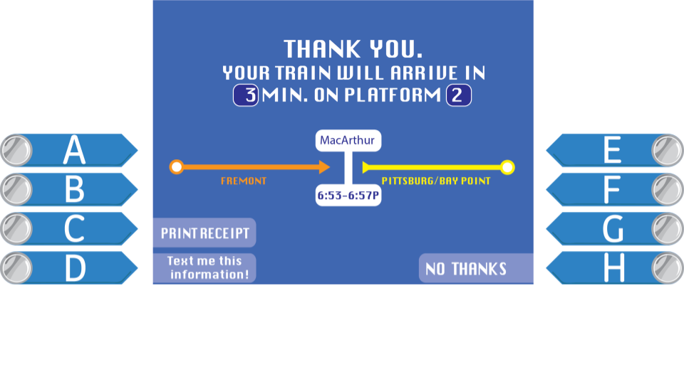

role: UI/UX Designer
skills: lofi mockups, user surveying/interviews, hi-fi mockups, user flow mapping
team: Elizabeth (designer), Clark (researcher), Andrea(researcher), Bryan (researcher)
In this project, I worked in a group of five as the visual and user experience designer to help solve primarily new user tensions with the current BART (Bay Area Rapid Transit) ticketing kiosk interfaces. Within the East Bay, we conducted interviews gauging user pains. We conducted a couple hundred interviews over the span of 4-5 weeks, adjusting interviews as we narrowed down our final design. In our final design choices, we considered and addressed intuition issues and the financial reasoning behind the current BART ticketing system and design.









